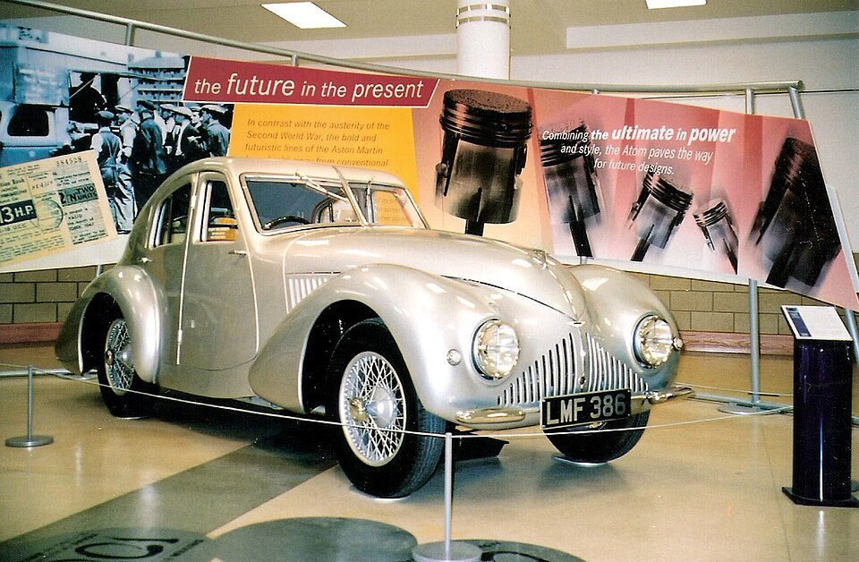

Design language
Its rounded body, flowing fenders, and balanced proportions create a softer type of innovation. The design feels elegant rather than aggressive, which makes it stand apart from later concept trends.

Historic Concept
The Aston Martin Atom represents an earlier vision of innovation, pairing smooth streamlined bodywork with elegant proportions that still feel distinctive and forward-thinking.
Its rounded body, flowing fenders, and balanced proportions create a softer type of innovation. The design feels elegant rather than aggressive, which makes it stand apart from later concept trends.
The Atom shows that experimental design does not have to look harsh or futuristic in the modern sense. Its appeal comes from refinement, harmony, and early design ambition.
This car adds historical range to the collection, helping the site feel more curated by showing that concept thinking spans multiple eras and design languages.